Introduction
Deploy apps to your own VPS in seconds. No cloud hosting premiums. No remote agents. Pure SSH orchestration.
AutoFlow gives you the ease of a modern PaaS (like Heroku or Vercel) while letting you retain complete ownership of your infrastructure and data. It connects directly from your machine to your server over SSH, compiling Docker images and configuring Nginx backends automatically.
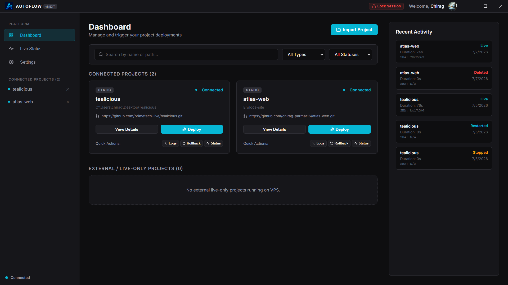
Unlike competitors, AutoFlow requires zero installation on your target host. It operates agentless: it uses standard SSH tunnels to manage dependencies, coordinate builds, and monitor telemetry. Your server's attack surface stays clean.
Platform Design
| PaaS Feature | Standard Cloud PaaS | AutoFlow Core |
|---|---|---|
| Data Privacy | Hosted databases, cloud access keys, remote vault syncs. | Local-First: Keys and databases are locked at rest on your machine. |
| Deployment cost | Per-application margins, bandwith charges, hidden surcharges. | Zero Markup: You pay only your flat VPS provider costs. |
| Host Overhead | Background monitoring daemons, remote orchestrators, open API ports. | Agentless: Standard SSH tunnels execute commands on-demand. |
Platform Flow
Installation
Get up and running with the desktop dashboard or the command-line helper.
Requirements
| System | Supported Versions | Sizing Limits |
|---|---|---|
| Your Machine | Windows 10/11 (64-bit), macOS Catalina+, Linux (Ubuntu/Debian) | 2-Core CPU, 4GB RAM minimum |
| Your Server (VPS) | Ubuntu 20.04 / 22.04 LTS, Debian 11 / 12 | 1-Core CPU, 1GB RAM minimum (2GB recommended for builds) |
Install Client Application
Pick the binary that matches your operating system:
- Windows: Download the installer executable (
.exeor.msi), run the installation wizard, and open AutoFlow from the Start menu. - macOS: Download the disk image (
.dmg), mount it, and drag the AutoFlow app icon into your local/Applicationsdirectory. - Linux: Download the standalone
.AppImage. Give it execution permissions and run:
$ chmod +x autoflow-client.AppImage
$ ./autoflow-client.AppImageActivate CLI
No npm wrappers required. To invoke deployments directly from your terminal, link the compiled command-line helper to your system path:
- Launch the desktop client.
- Go to the Settings panel.
- Find the CLI Assistant toggle and click "Install Global CLI".
- Approve the system permissions dialog to bind the `autoflow` command symlink to your terminal path.
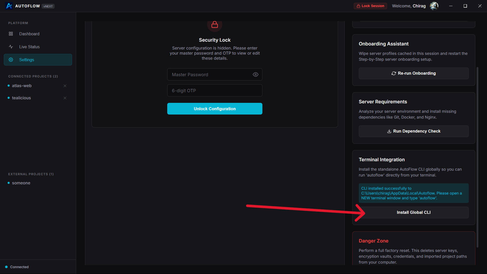
Quick Start
From clean install to first deployment in three steps.
1. Setup Security & Onboarding
When launching AutoFlow for the first time, the onboarding assistant will guide you through theme selection, server connection, and credentials vault configuration:
- Choose your preferred theme style (Dark Mode default).
- Enter your target host VPS IP address, SSH port, user account, and private key path.
- Set your Master Password to encrypt credentials locally, and sign in with your Google account.
- Scan the generated QR code with Google Authenticator or your password manager, and enter the 6-digit TOTP confirmation pin.
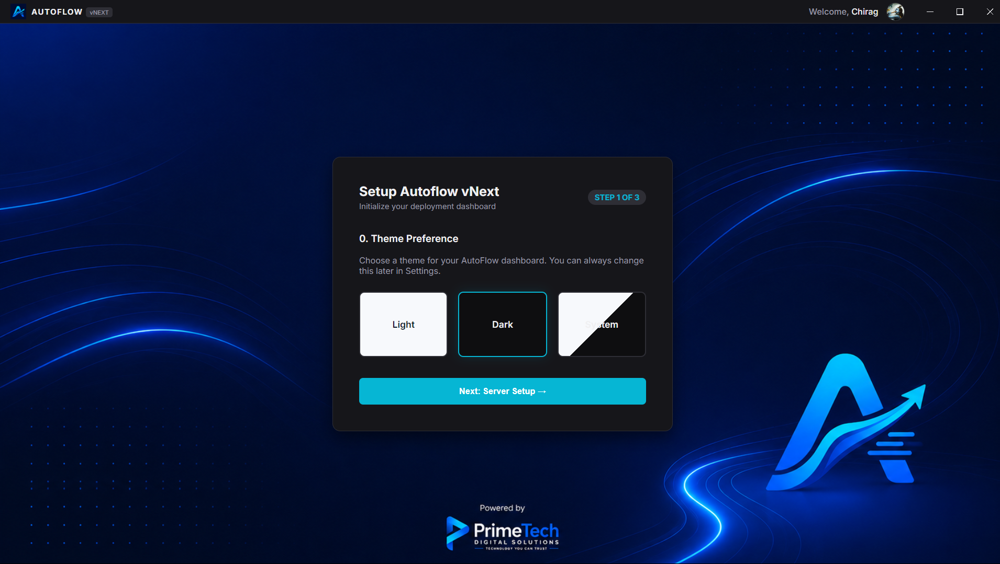
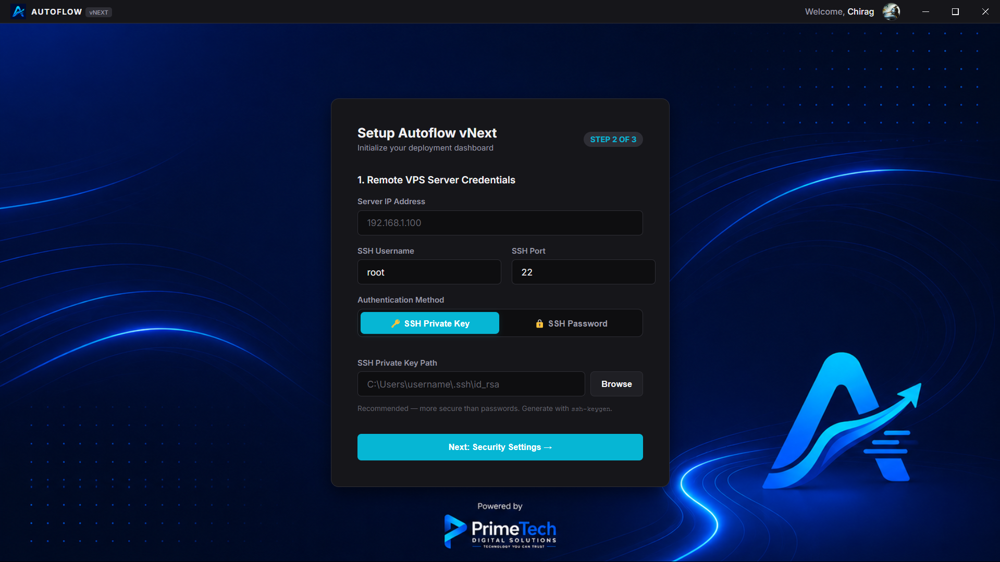
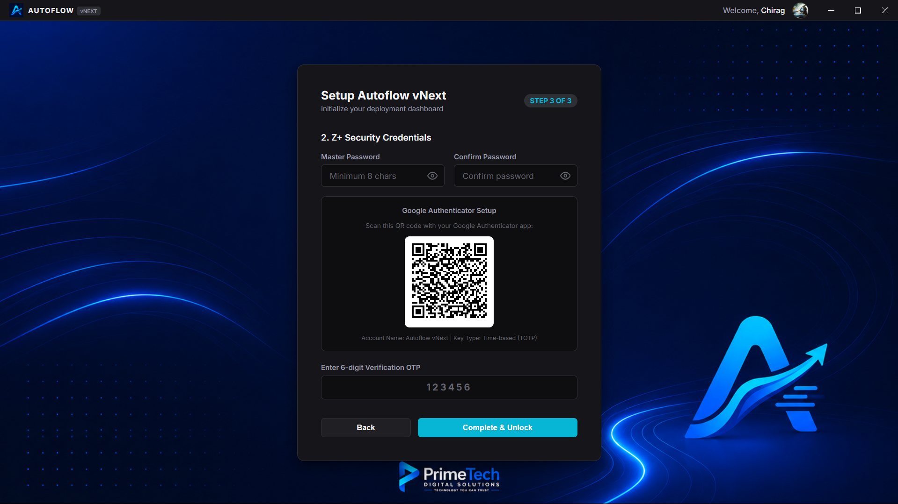
2. Connect and Provision Host
Navigate to Settings to verify server health and install necessary deployment engines:
- Click "Test Connection" to verify SSH handshake stability.
- Scroll down to Server Requirements and click "Run Dependency Check".
- If any dependencies (Docker, Compose, Nginx, Certbot) are missing, click "Install Required Packages" to launch the automated provisioning bridge.
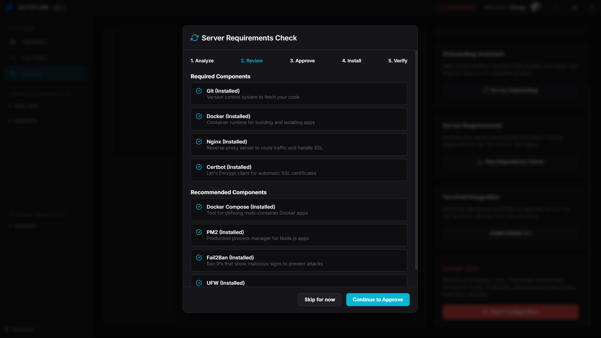
3. Link and Deploy App
Import your project folder and start the build:
- Go back to the main dashboard and click "Add Project". Select your project folder on disk.
- AutoFlow will scan your project, detect the framework, and write the configurations.
- Define your port assignment. Click "Initialize Project".
- Click "Deploy". AutoFlow will clone your repo, compile your container on the server, run health checks, and route web traffic without dropping a single active packet.
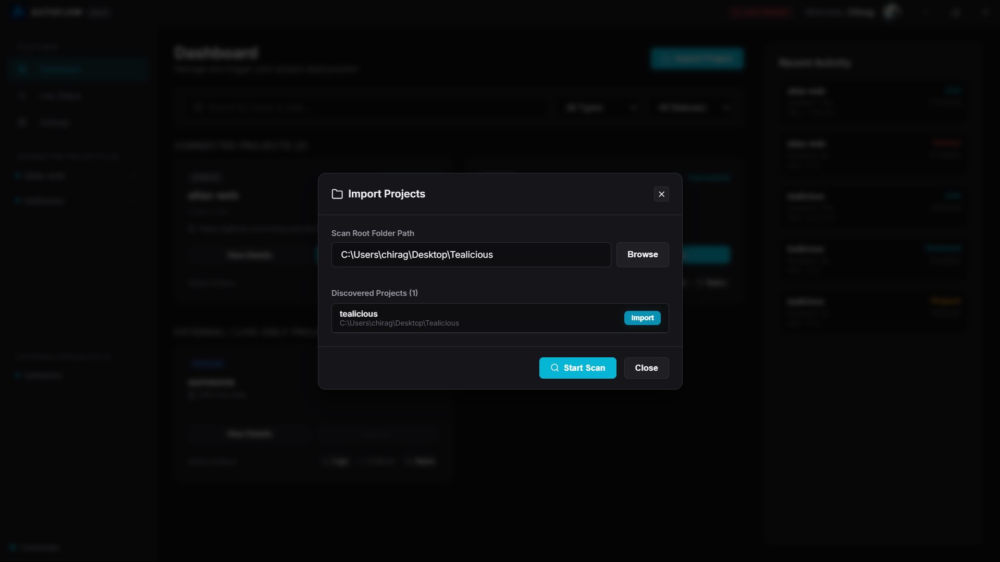
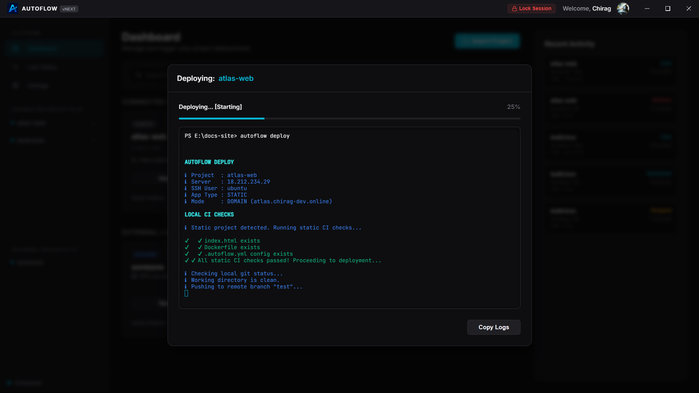
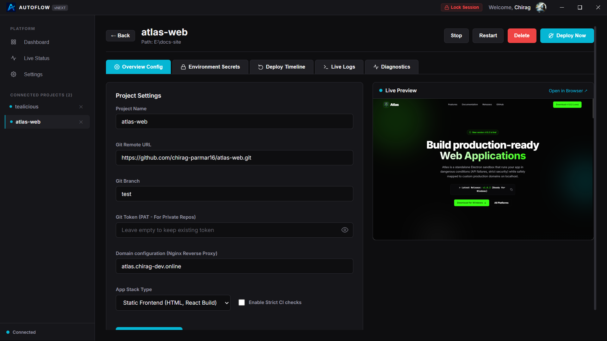
Credentials Vault
Your keys stay on your machine. Encrypted at rest, decrypted only in-memory when running actions.
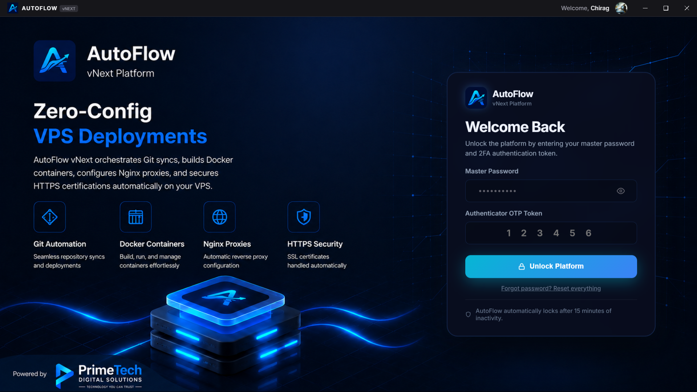
Security Architecture
All host credentials, passwords, private keys, and git access tokens are written to a local database file. Decrypted credentials reside strictly in volatile memory during SSH commands execution loops and are instantly flushed.
- Storage Path:
~/.autoflow/vault.json, secured with local file permissions (chmod 0600). - Encryption Cipher: AES-256-GCM. Decryption keys are derived using
scryptSyncwith a 16-byte random unique salt. - Master Key Derivation: Password verified using PBKDF2 with 100,000 hashing rounds and 64-byte key length (
sha512).
AutoFlow does not store your vault credentials on external servers. If you forget your Master Password or lose your Authenticator device, you will be permanently locked out of your vault.
Session Management
| Security Rule | Threshold Limit | System Action |
|---|---|---|
| Inactivity Timeout | 15 minutes (900s) of user idle state. | Session locks automatically. Decryption keys are wiped from RAM. Telemetry polls freeze. |
| Failed Decryption Limit | 5 consecutive invalid password entries. | System triggers a 15-minute vault lockout, blocking all decryption requests. |
Multi-Factor Auth (MFA)
Two-factor verification blocks unauthorized deployment execution, even if local session passwords leak.
Security Bounds & Mobile Setup
AutoFlow implements Time-based One-Time Passwords (TOTP) to authorize local vault decryption queries. The authenticator secret key is encrypted locally using your Master Password.
For generating these validation tokens, we recommend downloading SafeAuth Authenticator. You can install it on your mobile device directly from the Google Play Store (Android) or the Apple App Store (iOS). Standard authenticators like Google Authenticator or Microsoft Authenticator are also fully supported.
MFA Parameters
- TOTP Interval Window: Standard 30-second token lifecycle.
- Allowed Clock Skew: Step window offset set to 1. Allows up to 30 seconds of system clock drift between your mobile device and your workstation.
Triggers
MFA is required in the following scenarios:
- Vault Access: Unlocking the desktop interface on client startup or after timeout locks.
- Deploy Command: Running
autoflow deployvia CLI prompts for the active token before establishing the SSH bridge. - Credential Edits: Modifying SSH key paths, Git access tokens, or server passwords.
SSH Host Config
Connection management without background server side-channels.
Authentication Parameters
Configure these parameters in client Settings to target your server:
| Field | Type | Description |
|---|---|---|
SSH Host IP |
IP / Hostname | Public address of your remote VPS. |
SSH Port |
Integer | SSH port listening on the server. Default is 22. |
Username |
String | Sudo-authorized server user. Defaults to ubuntu. |
Auth Method |
Option Toggle | Private Key file path (Recommended) or Password auth. |
Connection Diagnostics
When connection diagnostics run, AutoFlow tests connection speeds, checks target sudo capabilities, and reports telemetry:
[SSH] Connecting to 157.240.22.35:22...
[SSH] Authentication verified. Handshake success.
[SSH] Checked host requirements. Sudo permissions OK.
[SSH] VPS Status: CPU load 4.2%, RAM usage 1.1GB / 3.9GB.
[SSH] SUCCESS: Server connection confirmed.VPS Bootstrap Setup
Provision dependencies on your host VPS directly from your local interface.
Automated Dependencies
AutoFlow relies on standard open-source tools to build and serve applications. If they do not exist on your host, the dependency assistant installs them over SSH:
- Docker Engine: Added via official Docker APT source. Builds isolated application container nodes.
- Nginx: Routes public HTTP/HTTPS requests to container runtimes.
- Certbot: Handles Certbot Let's Encrypt SSL certificate provisioning.
Provisioning Flow
- Go to Settings -> Server Dependencies.
- Click "Verify Dependencies". AutoFlow will verify package binaries.
- For missing packages, click "Install Required Packages".
- The terminal emulator streams the configuration script output in real-time.
Installing dependencies restarts Nginx, causing a temporary interruption to active web traffic. Run provisioning updates during off-peak hours.
15-Stage Pipeline
AutoFlow deploys code using a 15-stage pipeline, executing checks and building steps over SSH. Progress is updated in real-time in the app's Logger Console.
Pipeline Process Diagram
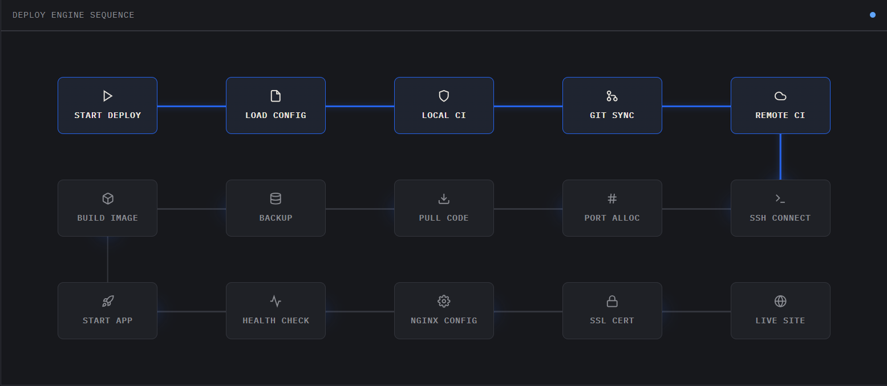
Stage Details
| Stage | Task Title | Description / Actions Executed |
|---|---|---|
| 1 - 2 | Validate Config & Environment | Parses the project's autoflow.config.json schema and decrypts server settings and credentials. |
| 3 - 4 | SSH Connection & Host Prep | Opens a secure SSH tunnel to the VPS, checks CPU/RAM utilization, and verifies that the required packages are present. Runs Swap memory check and partitions 1GB Swap file if missing. |
| 5 - 6 | Repository Sync & Verification | Checks out the configured project Git branch directly on the host VPS, verifying that the source matches. |
| 7 | Dependency Installation | Installs project dependencies (such as node packages, golang dependencies, pip packages) on the server. |
| 8 - 9 | Container Compile & Setup | Builds the isolated application container image and starts it up in a sandbox environment on a standby port. Securely transfers environment variables via SFTP. |
| 10 | Automated Health Diagnostics | Sends periodic HTTP calls to the new container's internal port. The deployment halts and rolls back if it does not receive a 200 OK response. |
| 11 | Dynamic Traffic Swap | Updates Nginx routing parameters to point to the new container's port instead of the old container's port. |
| 12 - 13 | SSL Bind & Nginx Reload | Obtains/renews the Let's Encrypt SSL certificate for custom domains and reloads the Nginx configuration. |
| 14 - 15 | Public Route Verification & Cleanup | Pings the public domain to verify routing health, stops the old container, and releases unused image resources. |
Zero-Downtime Rollout
Port-shifting ensures your active users never experience downtime during updates.
Port-Shifting Rollout Mechanism
AutoFlow deploys code changes via a smart rollout cycle:
- Search Standby Port: AutoFlow scans the port range
3000–4000on the server usingss -tuln, allocating the first free port. - Compile Standby: The new application container is built and started on the standby port. The active container continues serving traffic on the production port.
- Confirm Health: The container status is checked 5 times, waiting 2 seconds between checks. It must report as
Upto proceed. If it fails, AutoFlow outputs the last 25 lines of logs and halts. - Reroute Traffic: Nginx configuration is updated to map the domain upstream to the standby port. Configuration syntax is tested via
nginx -t. Once verified, Nginx reloads to swap traffic. - Cleanup: The old container is stopped and pruned, and its port is released for subsequent deployments.
Dynamic Port Security
When running in domain mode, the port is mapped using -p 127.0.0.1:hostPort:containerPort. This binds the port strictly to the localhost loopback interface, preventing external requests from bypassing Nginx and hitting the backend directly.
Automatic Rollback on Failure
If the standby container fails health checks, the deployment is cancelled. Traffic remains routed to the active container, and the standby container is stopped and pruned automatically.
GitHub Actions CI
Link Git validations directly into your deployment pipeline.
Strict CI Verification
When strictCI is set to true in your project's configuration, AutoFlow checks your repository's CI status before running a deployment:
- Queries the GitHub API for verification statuses on the target commit.
- If any checks have failed, the deployment pipeline is blocked.
- This prevents broken code from ever being deployed to production.
CI Check Timeout and Retries
GitHub Actions checks are polled every 8 seconds for a maximum of 5 minutes. If no checks are detected after 30 seconds:
- Strict CI Enabled: The deployment is instantly aborted.
- Strict CI Disabled: A warning is printed, and the deployment proceeds.
System Telemetry
Real-time telemetry and resource usage tracking without remote background processes.
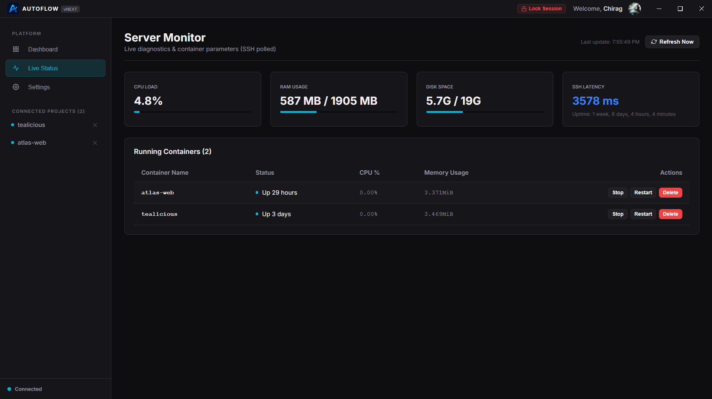
Optimized Single-Roundtrip Scraper
To avoid SSH execution overhead, AutoFlow runs a single optimized bash script to fetch all metrics instantly in one SSH roundtrip:
- CPU Load: Calculated using
top(calculates total active execution load). - RAM Allocation: Scraped via
free -m. - Disk Space: Parsed via
df -h /. - Docker Container Stats: Fetched in real-time using
docker stats --no-stream.
Real-Time Logs Streaming
The Logs tab in the Project Details workspace allows you to stream live container logs (stdout/stderr) from your remote server. This lets you debug runtime exceptions and monitor application health without having to manually log into your server via SSH.
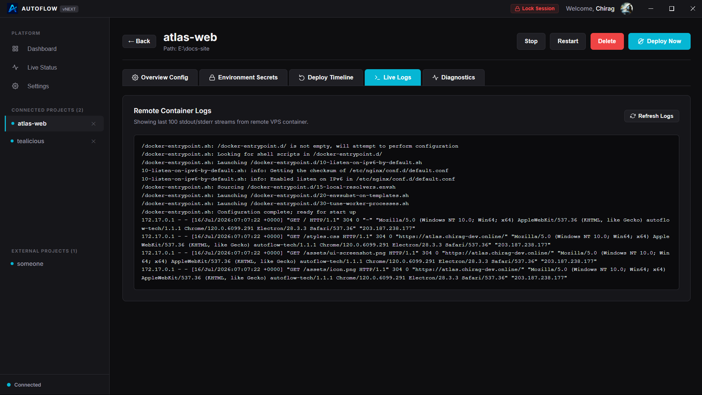
Rollbacks & History
Undo broken deployments. Restore previous versions of your application in seconds.
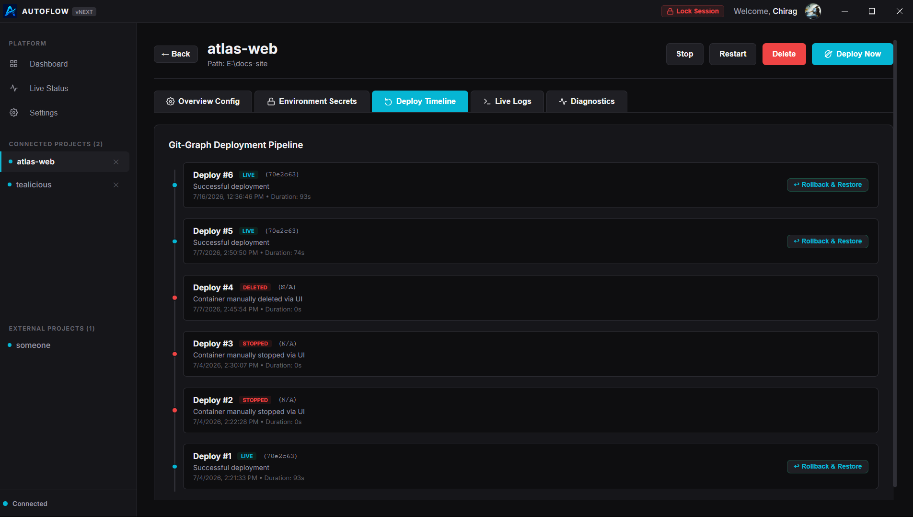
Snapshot Strategy
Before starting a new build, AutoFlow creates a rollback snapshot of your active application container:
- Renames the running container to
projectName_rollback(e.g.my-app_rollback). - Stops
projectName_rollbackto release its port binding for the incoming build. - Deployment Success: If health checks pass on the new container,
projectName_rollbackis permanently deleted. - Deployment Failure: If the new container crashes or fails checks:
- The new broken container is removed.
- The rollback container is renamed back to
projectName. - The rollback container is restarted, restoring service in seconds.
Container Controls
Manage the lifecycle of your remote application containers directly from the client interface.
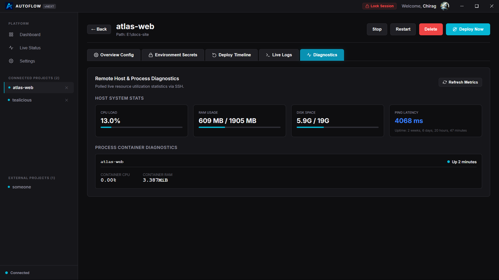
Supported Lifecycle Actions
| Action | Description | Impact on Production Traffic |
|---|---|---|
| Stop | Stops the running container. Nginx will return a 502 Bad Gateway error for incoming requests. |
Service Offline |
| Restart | Restarts the active container. Service is temporarily paused while the application process reboots. | Short interruption (seconds) |
| Delete | Permanently stops and prunes the container, deletes the configuration variables, and removes Nginx routing blocks. | Permanent Offline |
Firewall Automation (UFW)
AutoFlow automates firewall rules using UFW on the host VPS to secure backends:
- Domain Mode: Opens port 80 and 443. Explicitly blocks the allocated backend port from external public IP requests, securing the backend container.
- Direct Port Mode: Opens the specific allocated container port (3000-4000) for public traffic.
- Lockout Prevention: Always opens the configured SSH port (defaults to 22) prior to enabling UFW to prevent accidental administrator lockout.
CLI Commands
The AutoFlow command-line utility lets you initialize projects, trigger deployments, and check status directly from your terminal.
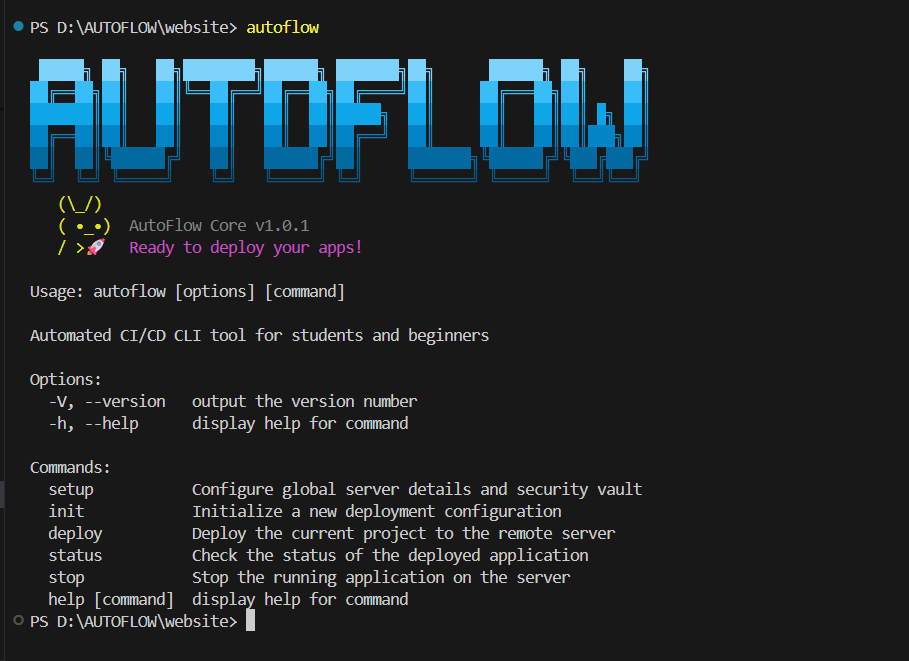
Global Commands Reference
autoflow setup
Configure target server SSH details and establish your local security credentials vault. Run this command first on clean installations.
autoflow init
Initialize an AutoFlow configuration file (autoflow.config.json) in your current directory. Follow the interactive prompts to define project details, port mappings, and frameworks.
autoflow deploy
Deploy the project in the current directory to your remote VPS. Unlocks the credentials vault, checks out Git changes, compiles the Docker container, runs health diagnostics, and configures Nginx routing.
autoflow status
Fetch real-time host status details (CPU and memory loads) and lists active containers running on the remote VPS.
autoflow stop
Stop the active application container running on your remote VPS.
Exit Codes
| Exit Code | Meaning | Typical Cause |
|---|---|---|
0 |
SUCCESS | The command finished successfully. |
10 |
CI_FAILED | Local tests or remote GitHub Actions checks failed. |
20 |
GIT_FAILED | Git sync or remote branch checkout failed. |
30 |
SSH_CONNECT_FAILED | Could not open SSH connection to VPS. |
31 |
SSH_TIMEOUT | Remote command execution exceeded maximum timeout (5 minutes). |
32 |
SSH_DISCONNECTED | SSH connection was lost mid-deployment. |
40 |
INSTALL_FAILED | Dependency installation step failed. |
50 |
BUILD_FAILED | Docker container compile step failed. |
60 |
CONTAINER_FAILED | Standby container failed to start or health checks failed. |
70 |
ROLLBACK_FAILED | Rollback execution failed or no rollback snapshot was found. |
80 |
NGINX_FAILED | Nginx configuration syntax check failed. |
90 |
SSL_FAILED | Certbot SSL certificate generation failed. |
99 |
UNKNOWN | An unexpected error or signal interruption occurred. |
Troubleshooting
Diagnose and resolve common connection, deployment, and configuration issues.
Common Error Scenarios
1. SSH Connection Refused
Failed to establish SSH connection to the remote VPS.
- Cause: The host IP is incorrect, the SSH port is blocked, or the server's firewall (UFW/iptables) is blocking incoming connections.
- Resolution: Verify your server's IP address. Ensure port 22 (or your custom SSH port) is open on your hosting provider's firewall. Verify that you can connect manually via standard terminal SSH.
2. Health Check Failures
The standby container failed to respond to health checks and the deployment was rolled back.
- Cause: The application process crashed on startup, or the Nginx port mapping is configured to the wrong internal port.
- Resolution: Go to the Logs tab in the Project Details page to inspect application startup traces. Ensure the port your application listens on matches the port defined in your configuration file.
3. SSL Certificate Generation Failures
Certbot failed to generate an SSL certificate for your custom domain.
- Cause: Your domain's DNS A records have not propagated yet, or snapping/Certbot is blocked by target firewall rules.
- Resolution: Ensure your domain's DNS A record points directly to your remote VPS public IP address. Wait 5 minutes for DNS changes to propagate, then navigate to Project Settings and click "Regenerate SSL".
Frequently Asked Questions
Can I host multiple projects on a single VPS?
Yes. AutoFlow automatically configures Nginx's reverse proxy rules to map unique domains to distinct internal container ports, allowing you to host multiple websites on a single server.
Where is my configuration vault stored?
Your encrypted credentials vault is stored locally in your user profile folder at ~/.autoflow/vault.json. It is never uploaded to any cloud database.
Does AutoFlow support custom branch deployments?
Yes. You can edit the branch value in your project's autoflow.config.json file to deploy code from branches other than `main` (e.g. `staging` or `develop`).
How does AutoFlow charge for plans?
AutoFlow dynamically checks plan limits (e.g., project count limits) on startup by querying your active Supabase session. Actual code deployments do not require any cloud transactions and run directly over SSH.